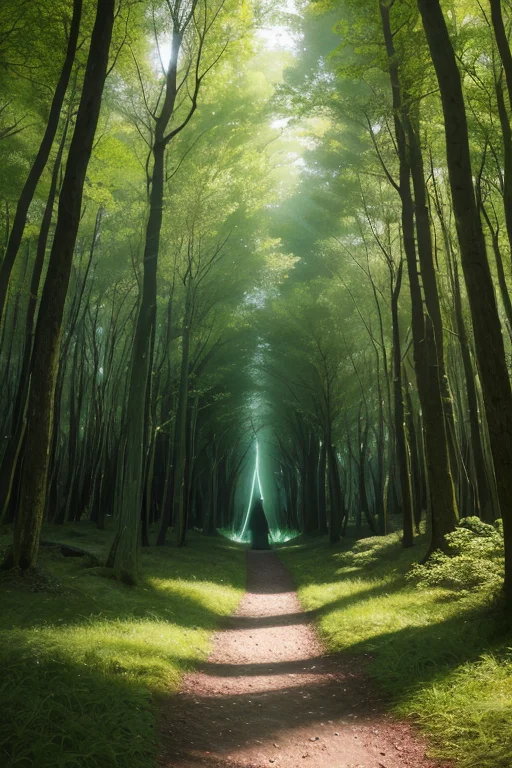
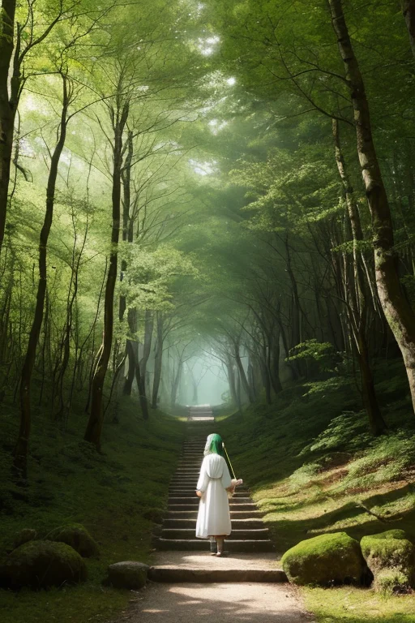

第一章 現実の和歌山
あなたはまだ気づいていない。この土地にも、王がいることを。
熊野古道の杉林は、深い緑の静寂に満ちている。巡礼者の足音は千年の間に石畳を磨き、苔むした道標は今も人を導く。しかし、その静けさの底には、別の音が潜んでいる。地盤が微かに軋む音だ。歪みの列島・日本において、和歌山は聖地と巡礼路が複雑に絡み合う、特異な「封印線」である。ここでは、かつて人々の祈りによって鎮められた地の力が、長い眠りについている。
高野山の奥之院。空海が開いたこの聖域は、信仰の波が最も濃密に凝縮する地点の一つだ。王の星から遣わされた者、キイリア・パスウェイはここに座す。その姿は、杉の古木のように静かで、巡礼者の白装束のように清らかだ。彼の役目は、この地に封じられた膨大な「祈り」のエネルギーが、地殻の歪みを刺激して暴走しないよう、絶えず微調整することである。彼は災害を消せない。ただ、熊野灘に迫る津波の速度を一秒遅らせ、紀伊水道を震源とする揺れを一階級弱める。それは、巡礼路を歩く一人が転ぶか転ばないかほどの、かすかな調整に過ぎない。
第二章 歪みの兆候
高野山の奥之院。杉木立の闇が、いつもより深く沈んでいた。キイリアの手のひらに浮かぶ紋章が、微かに震える。緑の光道が、ところどころで白く痙攣している。地中を流れる「祈り」の信仰波が、乱れ始めていた。
「王、熊野古道の『中辺路』で、道標が三つ、一夜で苔に覆われました」
パセラの声は静かだが、その報告は不穏だった。道は続いている。しかし、その継続そのものが、千年分の巡礼者の願いという重みで、地盤に負荷をかけている。クマノアが地中を駆け巡り、信仰の流れを安定させようとするが、まるで老いた血管に溜まったコレステロールのように、淀みが解消されない。
梅干しを漬ける塩のように、この地には「封じる」力が宿る。紀州備長炭が純化する炎のように、祈りは浄化されるべきだった。しかし、封じられたものは、いつか溢れようとする。キイリアは目を閉じ、慈悲の感情を波長に乗せる。それは治療ではなく、痛みを和らげる湿布のようなものだ。古道を踏む足音が、ほんの少し軽くなるように。歪みの兆候は、封じられた道が、目覚めの前にもがく、かすかな痙攣であった。
第三章 王の葛藤
熊野古道の石畳は、苔に覆われて柔らかく沈んでいた。キイリアはその上に立ち、掌をかざした。指先から伸びる白と緑の光の糸は、地中深く、幾重にも封印された「道」へと届いている。それは巡礼路そのものの原初の力であり、あまりに強すぎるがゆえに、古の王たちが地脈に縫い留めたものだ。今、その縫い目が緩みつつある。解放すれば、この地の信仰はかつてない高みへ至るかもしれない。だが、制御を失えば、道は人を導くのではなく、地割れとなり、人々を飲み込む。
「慈悲とは、封じることか、解くことか」
パセラが囁く。その声は、那智の滝の飛沫のように冷たい。
キイリアは答えることができなかった。彼の内側で、王としての理性和、この地で育んだ慈悲の感情が軋んでいた。解放への衝動は、巡礼者たちの「続けたい」という切実な願いと共鳴していた。しかし、紀州備長炭がゆっくりと純化するように、力もまた時間をかけて制御されるべきなのだ。歪みの波が押し寄せる。キイリアは光の糸を握りしめ、締め直す。一瞬、解放の甘美な幻想が脳裏を過ぎる。彼は目を閉じ、封印を維持した。道は続いている。だが、今はまだ、この重い蓋の下で。

第四章 妖精との対話
光の糸が張り詰めた空間で、主席妖精パセラが静かに語り始めた。その声は、熊野の杉林を抜ける風のようだった。「この封印は、道そのものの暴走を防ぐためです。巡礼路は願いを運ぶ血管。あまりに多くの『どうか叶えてください』が、あまりに強い『ここで止まりたくない』が、一点に集中した時、道は自らを食い破ろうとします。八百年前、高野山の麓で起きた地割れは、その予兆でした」
クマノアが、巡礼道の硬い土の感触を伝えてきた。無数の足跡の重なり。それは祈りでもあり、負荷でもある。「王よ。あなたが感じる『解放したい』という衝動は、本当の慈悲でしょうか。それとも、蓄積された願いの圧力に、あなた自身が共鳴しているだけでしょうか」
キイリアは、手の中の光の糸を見つめた。緑と白が絡み、時に激しく脈打つ。彼は感情を持った。ゆえに、苦しむ者を前に蓋を閉め続けることに、自らも苦しんだ。パセラが言った。「道を続けるとは、時に進むことであり、時に耐えることです。この封印は、道が自滅しないための『耐える』形なのです」
歪みの波が、再び紀伊半島の地殻を撫でる。キイリアは、微かに震える糸を、優しく、しかし確かに支えた。

第五章 微調整と余韻
キイリアは、熊野古道の杉林に立っていた。足元の巡礼道は、長い年月で磨かれた石が微かに温もりを帯びている。彼は目を閉じ、地中に張り巡らされた光の糸に意識を集中させた。激しく波打つ歪みの流れを、一つひとつなだめ、本来の経路へと静かに導いていく。それは巨大な津波を消すことではなく、その波頭が海岸に達するほんの数秒を遅らせ、逃げ惑う人々の足を滑らせないようにすることだ。高野山の奥之院に眠る祈り、那智の滝に打たれる水飛沫、すべてが微調整の材料となった。
彼の手からは、白と緑の光が穏やかに流れ出る。しかし、その光の輪郭が、以前よりほんの少し、滲んでいるように見えた。感情を持つことは、王としての純粋な「調整」の力に、かすかな「揺らぎ」をもたらしていた。パセラが傍らで見守る。彼女の目には、慈悲と一抹の憂いが同居していた。
歪みの大きな波は過ぎ去った。紀伊半島は、また静かな時を取り戻す。だが、キイリアは知っていた。次の歪みが来るまでに、この「揺らぎ」が自分をどこへ導くのか、と。彼は古道を見つめ、自らに問うた。あなたの道は続いているか。答えは、まだ道の先にあった。
あなたの町にも、王がいる。